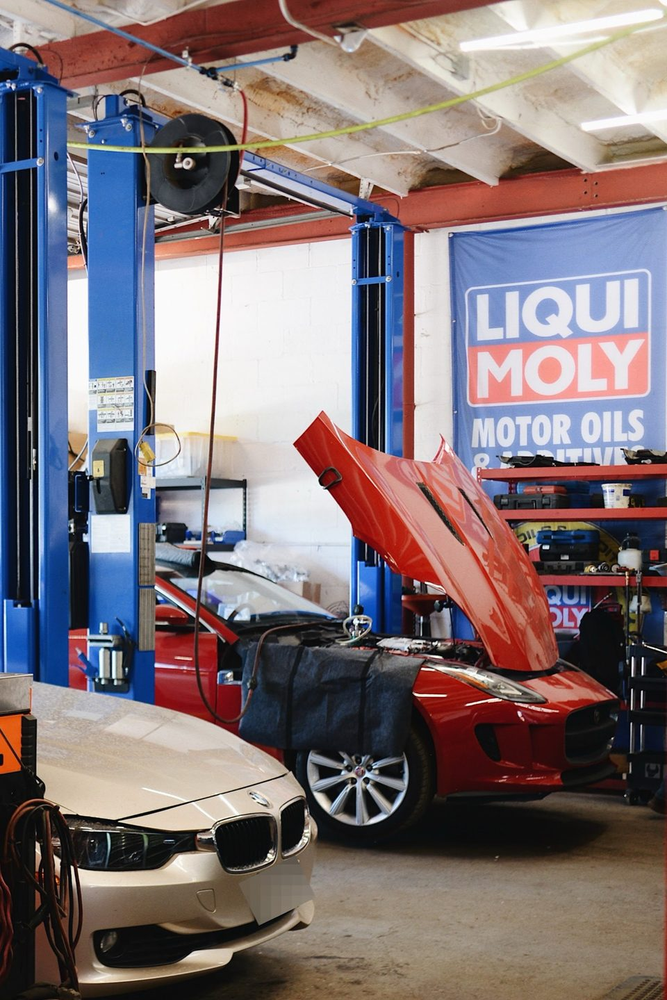

CH-01
Check engine diagnostics
Factory-grade tools to find the cause of a warning light, with the findings explained.
- Warning lights
- Scan and test
- Clear findings
European auto repair · Fort View Rd, Austin
BMW, MINI, Mercedes-Benz, Land Rover and Jaguar repairs, explained clearly by text and email.

System check
Diagnostics, brakes, transmissions and more, on European cars only.
CH-01
Factory-grade tools to find the cause of a warning light, with the findings explained.
CH-02
Inspection and repair of the braking system, followed by a 10-mile test drive.
CH-03
Transmission repair and replacement, test driven before the car is returned.
CH-04
Slipping, sticking or grinding gears looked at and repaired.
CH-05
Suspension work followed by a 10-mile test drive and a QC check.
CH-06
A/C service and repair for Austin heat, plus electrical diagnostics and repair.
Driver log
4.9 average over 1302 Google reviews
Jeff M.GoogleThis shop does excellent work and, super important to me, they communicate well and thoroughly. No calling and leaving voicemails in the ether. Instead, they email and text and provide clear prompt information and then do what they say they will do. They even sent me home in a Lyft after I left my car, and I recommended them to the driver.
shukur A.GoogleHad a very good experience with them. I brought my 1988 BMW 325IS for several maintaince items and the whole process was handled professionally. Rhett was great to work with, very responsive throughout the process, kept me updated and was straightforward about their findings and recommendations. The after-hour drop off/pick up was especially convenient since I was coming from Dallas area.
Leila H.GoogleEfficient and easy…Nicole was great! She was communicative and nice. Everyone who worked there, the younger mechanics were so nice and professional. I was really impressed. Figured out what was wrong right away. I took my car to another place before and they couldn’t figure it out so, I was really happy with the service here. Highly recommend!!
Jonathan S.GoogleTerry Sayther is fantastic. I have had them do several repairs for us on older BMWs. They have always fixed the car fast and for a very reasonable price. And they have always fixed the problem. Maybe one the first mechanics I ever been truly happy with.
Live feed


Who's under the hood
Family-owned on Fort View Road. We work only on BMW, MINI, Mercedes-Benz, Land Rover and Jaguar, with the tooling and diagnostics those cars need.
Founders Terry and Debbie Sayther were among the founding members of BIRMS.org, the European auto repair community, more than 20 years ago.
Open Monday to Friday. After-hours drop-off available.